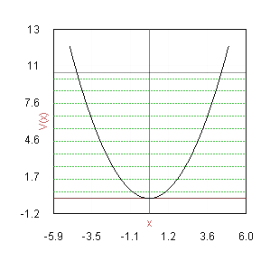

La pantalla de resultados muestra las soluciones obtenidas como lista de energías y visualizando las ondas solución. La numeración de las ondas se realiza según el siguiente convenio.
Si el potencial es unidimensional la numeración comienza en 0
Si el potencial es tridimensional la numeración de las ondas comienza en 1 y se añade un prefijo según el momento angular: S=0, P=1, D=2, F=3, G=4 …
Si la energía inicial es mayor que el mínimo del potencial, y por tanto no se puede garantizar haber encontrado el estado fundamental, la numeración irá marcada por el signo de exclamación
Muestra el valor de la energía solución para cada onda, y en caso de que la opción haya sido marcada, la suma de masa y energía. La lista de energías solución puede exportarse a un archivo de texto mediante la opción de menú exportar.
La distribución del espectro de energías se representa superpuesto a la visualización del potencial para poder apreciar posibles patrones en el espectro

Para cada energía solución se representa también su función de onda. Los límites de la función de onda se adaptan a las nuevas soluciones de forma que todas tengan la misma escala horizontal y vertical y la comparación tenga sentido. Haciendo click sobre la onda obtenemos una imagen a mayor resolución que se puede exportar en formato JPG